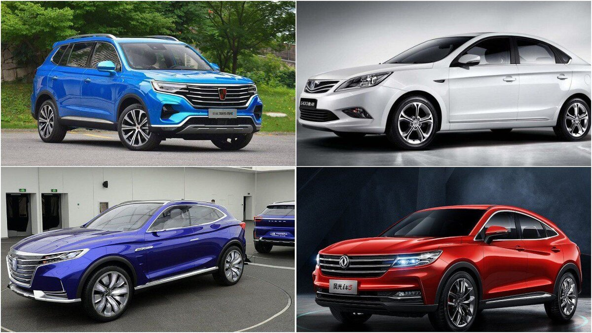
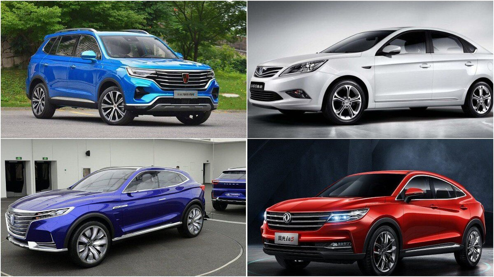

Введение
Китайские автомобили стремительно набирают популярность во всем мире. С каждым годом качество и инновации китайских производителей становятся всё более заметными, что делает их серьёзными конкурентами на мировом рынке.
Китайские автомобили стремительно набирают популярность во всем мире. С каждым годом качество и инновации китайских производителей становятся всё более заметными, что делает их серьёзными конкурентами на мировом рынке.
Китайская автомобильная промышленность начала своё развитие в середине 20 века. С тех пор она прошла долгий путь от производства копий западных моделей до создания собственных инновационных автомобилей.
С развитием технологий и увеличением инвестиций в исследования и разработки, китайские автомобили продолжат своё развитие. Основное внимание будет уделено электромобилям и автономным транспортным средствам.
Подробнее об этом можно узнать из этой статьи.